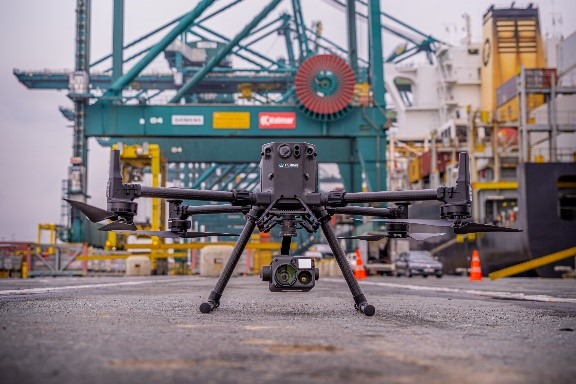
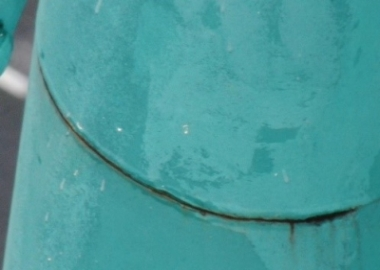
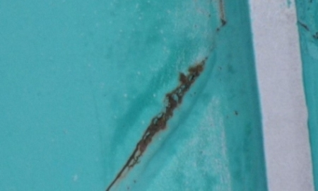

Virtual Reality-based annotation environment for drone images to implement 3D AI-based defect detection on digital twins
Problem statement
Container terminals are losing money when critical assets like container cranes experience unexpected downtime due to defects (e.g. cracks, corrosion). The cost due to operational losses and penalties if a vessel cannot unload go up to 5 Mio EUR per day. Regular inspections by experts are critical to gathering the right maintenance insights to take the needed preventive maintenance actions. Due to the limited availability of experienced inspectors worldwide, there is a high need for tools to support these inspectors and improve the inspection efficiency. With the use of photogrammetry and drone images, 3D models can be created in a relatively efficient way. If an inspector would be able to inspect the asset in a virtual reality environment and annotate the defects, we could increase the efficiency of the overall inspection process significantly. The inspector does not need to travel to the asset, as a local drone partner could create a 3D model from that respective asset and upload it to the virtual inspection pipeline. The experienced inspector can support the container terminals from a remote location with his finding based on the virtual inspection he did. By annotating the 3D models in virtual reality, we are taking the first step towards the building of a training database which can be used to train neural networks who can perform defect detection on 3D data. Being able to use 3D AI for defect detection on 3D models would support the inspector even more during his virtual inspection.

Goal
In this thesis the student will develop a virtual reality framework in unity where a point cloud, based on drone images, can be automatically uploaded, and optimized for use. He/she will develop the needed functionalities for the inspector in the virtual environment to annotate the 3D model. (e.g. spray annotations, label functionality, teleporting, zoom, …) An optimal VR reality inspection and annotation strategy needs to be defined in line with the requirements for building a training dataset to train a neural network on 3D data. Additionally, he/she will explore new technologies like PyTorch3D and develop a basic first neural network to detect corrosion defects on steel structures based on 3D data.
 
This thesis is being conducted by Ayco Neyt (Ayco.Neyt@UGent.be).